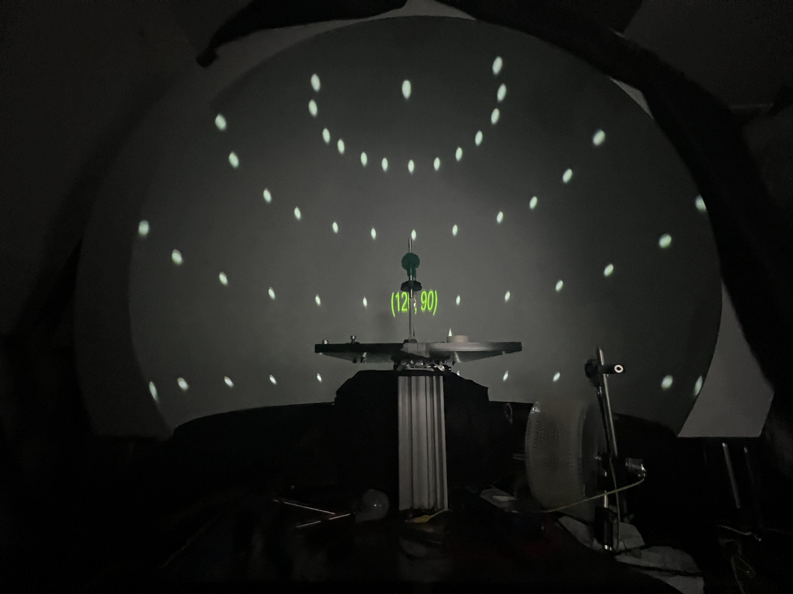
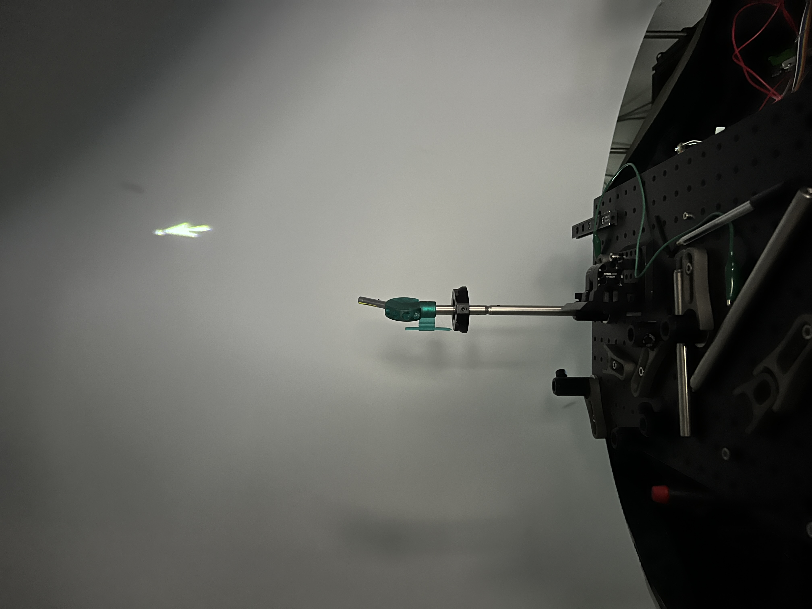
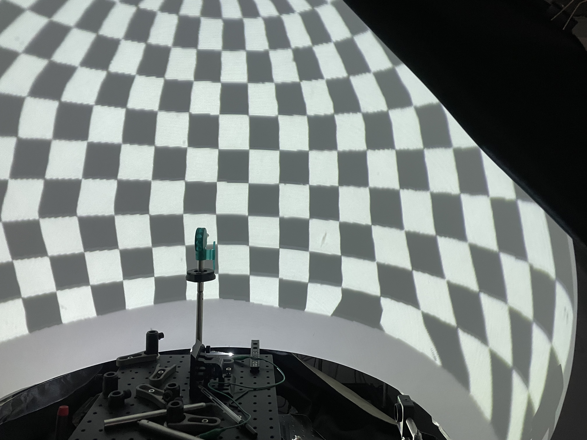
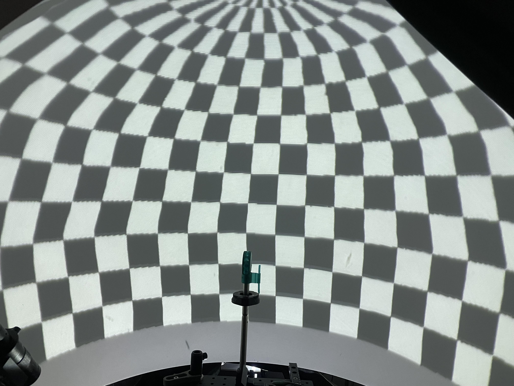

Mesh Mapping
Protocol for producing a mesh-mapping file using Bonsai (EH, April 2021)
Purpose
Mesh mapping is performed to generate a mapping from pixel space (x,y) to visual angle space (azimuth, elevation), or equivalently cartesian coordinate space (x,y,z). Mesh mapping is generally required when the relationship between pixel space and visual angle/cartesian coordinate space is non-trivial, such as when projecting onto a demispherical dome.
Hardware required
- The display surface for which you are producing a mesh map.
- Laser pointer (ideally one that clicks to stay on/off).
- System for accurately targeting laser pointer at a given azimuth and elevation (in degrees) from the perspective of the animal’s head position. We use a custom 3D printed part suitable for holding our laser pointer at intervals of 30 vertical degrees and a high-precision rotation mount for targeting specific azimuth angles. We use RSP1X15/M from ThorLabs.
Overview
We provide 3 Bonsai workflows and a Matlab script for producing a mesh mapping file for a curved display surface:
- MeshMapping_Generate is for interactively generating an initial mesh mapping .csv file in Bonsai.
- The Matlab script MeshMapping_MatlabInterp.m is for interpolating and formatting the Bonsai-generated mesh mapping .csv file for use with the BonVision MeshMapping node.
- MeshMapping_showCheckerboard draws a simple checkerboard to test the accuracy of your mesh mapping file.
- MeshMapping_correctPositions can be used to interactively adjust indiviudal points in your mesh mapping file.
The final output is a .csv with 5 columns (no headers): (pos_X, pos_Y, norm_Az, norm_El, intensity).
where pos_X and pos_Y are normalised screen positions of each cooordinate, norm_Az and normEl are normalized azimuth and elevation co-ordinates of each position and intensity is desired intensity values for each co-ordinate (generally a column of 1's).
You can download the workflows from here.
Protocol
Step 1 - Generating initial mesh map
Open the MeshMap_Generate workflow and enter the required parameters:
- Height and Width of display projector (in pixels). E.g. Width = 1280, Height = 800.
- The desired angular span of the display (HSpan for azimuth, VSpan for elevation). E.g. HSpan = 240, VSpan = 120.
- The number of subdivisions of the angular space which you wish to perform (HSubdiv for azimuth and VSubdiv for elevation). These values generate the grid of angular points you will manually assign. E.g. for HSpan = 240 and HSubdiv = 12 there will be 13 equally spaced points (0:20:240) specified along the azimuth for each elevation separate elevation.
- Specify the display device property of the CreateWindow node to the display you are mesh mapping (e.g. ‘Second’).
- The filename for the Mesh Mapping .csv file.
You can now start the workflow. A blank shader window should fill the display surface being mesh mapped and a grid of circles representing the points to be assigned should be displayed on the display device which is showing the Bonsai GUI. The green circle indicates the current point being assigned. If you cannot see the grid, select the visualiser for the DrawGrid node. You may need to restart the workflow/assign the first point before the grid appears.

Now work through the points to be assigned. For each point:
- Target the laser pointer at the angular position to be assigned.
- Using the mouse, position the small rendered circle on the display being mesh mapped to align with the laser. Mouse Keys may be useful for the final positioning. Once you are satisfied with the position of the circle, click the left mouse key. You can then save this point by pressing the ‘d’ keyboard key. The green circle on the grid of circles should now have moved to the next point to be assigned. Repeat the previous step.
- If you wish to reassign a point you can right-click the mouse to move back to a previous point.
Once you have assigned all the required points close the shader window and workflow. The mesh mapping .csv file will be saved in the location you specified before starting the workflow.

positioning the cursor where the laser is pointing
Step 2 - Interpolating and formatting the mesh mapping file
Open the matlab script MeshMapping_MatlabInterp or MeshMapping_3DMatlabInterp. Assign the variables:
- input .csv filename
- output .csv filename
- Angular Span (in degrees, as assigned in the MeshMapping_Generate workflow).
- Display Dim (in pixels, as assigned in the MeshMapping_Generate workflow).
- interpolation resolution for both azimuth and elevation. We suggest values that are factors of the angular span values.
If producing a sphere-mapping meshmap for 2D stimuli you can now run the script (you may need to adjust the .csv writing function depending on your matlab version). You should now have an interpolated and correctly formatted mesh mapping .csv file to use in Bonsai.
If producing a cube-mapping meshmap for 3D stimuli the script will produce a .bin file which you must process using the python interpolator.py script (note: to be consolidated). The output of the python script is a .bin file ready to use in your 3D bonsai workflow.
Step 3 - Testing the mesh map
Open the Bonsai workflow MeshMapping_drawCheckerboard.
Point the filename property of the MeshMapping node to the output file from the Matlab script.
Set the Bottom/Top and Left/Right properties of the OrthographicView node as the limits of the azimuth and elevation co-ordinates being presented (related to HSpan and VSpan from Step 1). E.g. Bottom = -30, Top = 90, Left = -120, Right = 120.
Set the ExtentX and ExtentY of the DrawCheckerboard node as the HSpan and VSpan values from Step 1. Specify the desired number of rows and columns (VSubdiv and HSubdiv, for example).
Run the workflow and ensure the checkerboard is displayed correctly. Each square should cover an equal amount of angular space as viewed from the perspective of the animals head position. Corners of each square should lie along meridians and parallels of each other.
Note if the checkerboard renders with jagged edges then adjusting the interpolation values in Step 2 may provide a solution.

testing the meshmap with a checkerboard - note the warping in the bottom right
Step 4 - Refine mesh map (optional)
If step 3 demonstrated imperfections in the mesh map then you can choose to adjust individual points.
Open the Bonsai workflow MeshMapping_correctPositions.
Set the resolution values (Height and Width) of the shader window as per your initial settings used for mesh mapping generation. Ensure the shader window is pointing to the correct display device (e.g. ‘Second’). Specify the desired output filename of the corrected mesh mapping .csv file.
For each point you wish to adjust perform the following:
- Using the mouse move the cursor to the point you wish to adjust. Press the keyboard ‘g’ key to ‘get’ the point. Text will appear to notify you of the point you are adjusting (in angular coordinates). Move the mouse cursor to the new desired location (i.e. to an updated position specified by your laser pointer). Press ‘s’ to set the point. You can press 's' multiple times until you are satisified with the new placement.
- Once you have finished making adjustments, press the ‘k’ key to save the new mesh map file.
- The new file will have the same format as the output of the MeshMapping_Generate workflow. You should now perform steps 2 and 3 again to interpolate and test your mesh map. Repeat this process iteratively as required.

correction worflow